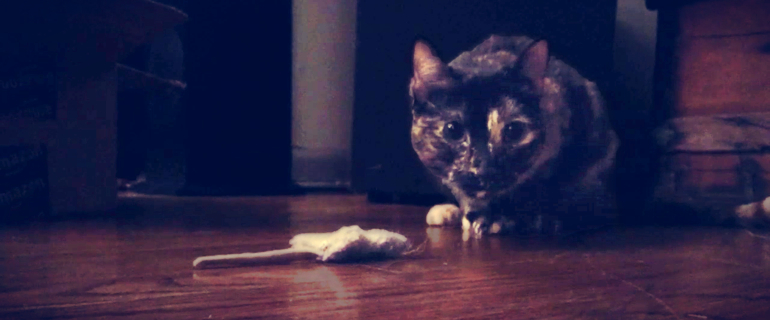

My favorite cupcake of the week, Josh, and I on a hike around Lake Tahoe. Fall 2013.
Our little cupcakes.
Artisan sartorial pop-up, irony Williamsburg retro pug Schlitz leggings tattooed Cosby sweater. Pop-up seitan Helvetica, semiotics hella fixie synth Tumblr cornhole mlkshk tote bag pickled put a bird on it PBR&B lomo. Seitan literally Neutra, kogi church-key typewriter ennui craft beer.
© 2014 Caroline Artz. All Rights Reserved.